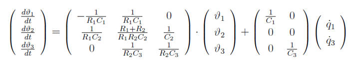

Wall_basic
Path: CARNOT/Basic/Thermal_Models
Purpose:
Basic thermal model of a wall, floor or ceiling of a house.
Description:
The heat conduction of a wall can be assessed with the Beuken-model as
shown in Figure.
The underlying assumption is a one-dimensional heat flow. Each wall-layer
is separated into two equal partial capacities, to be seen as on both surfaces
of the wall-layer. Should the wall consist of multiple partial layers, their
partial capacities of adjoining layers are combined in a single capacity ci.
Thermal conductivity through a wall layer is modelled with resistance ki which
combines both partial capacities. The transition from one layer to the next is
described with node i to which capacity ci and resistances ki-1 and ki are
attached.
Transformig the figure of the Beuken model to a matrix equation given when
keeping the resistance values:

with
| Symbol | Used for | Unit |
| Ti | temperature of node i | °C |
| Ci | specific heat capacity of node i | J/kg/K |
| Ri | specific heat resistance between node i and node i+1 | m2*K/W |
| q1, q3 | thermal power at the outer / inner surface of the wall | W/m2 |
The composition of a wall in j layers is thus described in Beuken with j+nodes via j+1 differential equations. The equation system for a two-layered wall as in Figure goes as follows on matrix convention:

with

Attached to the first and last node (wall-surfaces) are thermal transfer
resistances ar and ac.
The number of nodes depends on the time-constant given in the dialog box. A minimum
of two nodes per layer is taken. The condition for the number of sublayers in one
layer is (adapted from [Feist 1994]):
N_sublayers = ceil(sqrt(rho*C / (2.0*cond*TAU)) * dnode[j]) + 0.1)
with
| Symbol | Used for | Unit |
| cond | thermal conductivity | &W/m/K |
| dnode | thickness of layer | m |
| n | number of sublayers | - |
| rho | density | kg/m3 |
| TAU | timeconstant defined for the model | s |
Input:
| qdot_in | : | thermal power at the inner surface of the wall in W/m2 |
| QdotActive | : | thermal power injected to the active layer in W/m2 |
| qdot_out | : | thermal power at the outer surface of the wall in W/m2 |
Output:
| Tin | : | inner surface temperature in °C |
| Tactive | : | temperature of the active layer in °C |
| Tout | : | outer surface temperature in °C |
Parameters and Dialog Box:

Examples:
Open the example explorer from the Matlab command window
ExampleBrowser
or load the examples via the CARNOT library.
Validation
The model has not yet been tested under all conditions. It has been compared to
the results given by Feist (Feist 1994) and to the measured and calculated data
of the SOPASIM-project (Balters 1995). Comparison to measurements has also been
done with data from a project in Argentina (Mueller 1999).
Literature:
Balters, E., Lehmann, H., Schaub, A.: SOPASIM - Test weit verbreiteter
Solar-Passiv- Simulationssysteme für Architekten,
Abschlussbericht, UHL Data, Herzogstr. 27, Aachen, Arbeitsgemeinschaft Solar
Nordrhein-Westfalen, 1995
Feist, W.: Thermische Gebäudesimulation - Kritische Prüfung unterschiedlicher
Modellansätze, Verlag C.F.Müller, Heidelberg, 1994
Kasten, F. Strahlungsaustausch zwischen Oberflächen und Atmosphäre,
VDI-Bericht, Nr. 721, 131-158, Düsseldorf, 1989
Mueller, C.: Diplomarbeit University of Karlsruhe, 1999
Recknagel-Sprenger-Schramek: Taschenbuch für Heizung + Klimatechnik, R.
Oldenbourg Verlag München Wien, 1995
VDI-Wärmeatlas, Berechnungsblätter für den Wärmeübergang, 7. Auflage, VDI
Verlag GmbH, Düsseldorf, 1994
Wimmer: Thermisch-Energetische Gebäudesimulation, Dissertation Universität
Kassel, 2004
Characteristics:
| Direct Feedthrough | : | Yes |
| Sample Time | : | Inherited from driving block |
| Vectorized | : | No |